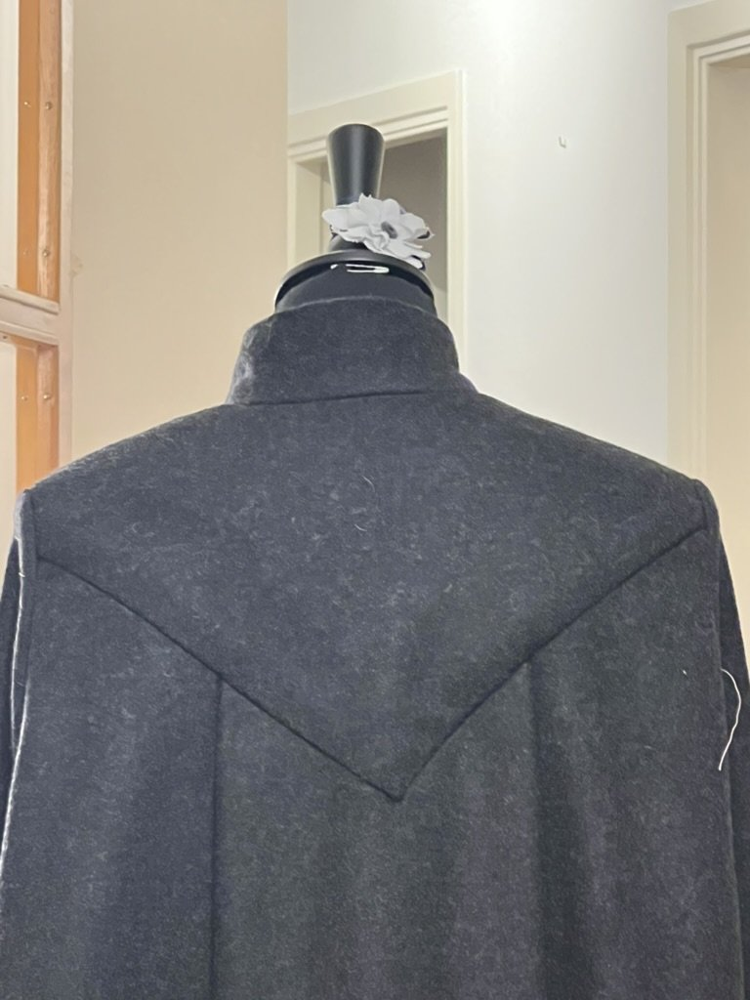

Cape project
Fabric selection
Waaay too many thoughts about wool
Some more thougths about how the construction is a bitch and i did enough basting for years so that the slippery bitch linen lining doesn't shift just to end up with a floating lining anyways
Construction notes
Lots of interfacing i only put in at the last possible moment, and padstitching as well, so it was a pain to do because nothing was flat any more
Black historical reproduction skirt from patterns of fashoin 2
Pattern enlarging
Draft the pattern on my favourite white paper table cloth and do some math to make sure the waistband fits me. Don't make it longer, because this woman was tiny and the skirt is tea length on me which is what i was going for.
construction
I made a janky af waistband, and had to insert a line of piping because i accidentally miscalculated the seam allowances but it looks great. I also tried to do a bind hem but the wool is so drapey and delicate that you still can kind of see. at least there's no seamline